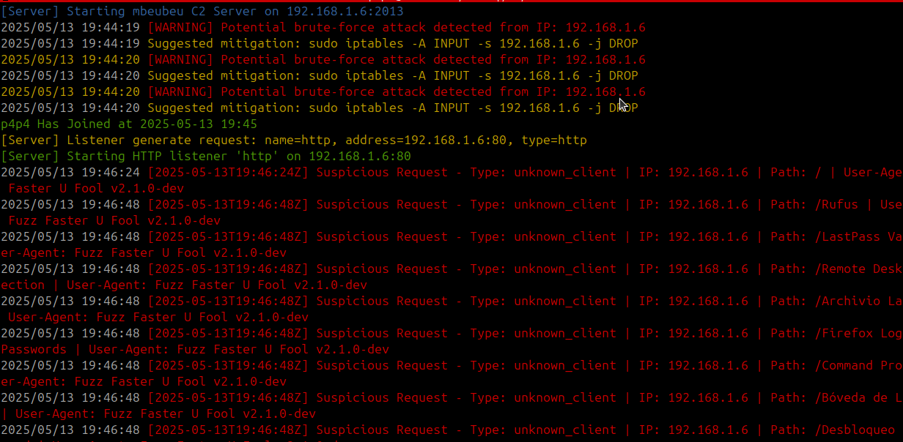

Mbeubeu Teamserver

To launch the TeamServer, simply run the
mbeubeu-teamserver binary as root:sudo ./mbeubeu-teamserver -h
2-
You can specify options such as the port, configuration profile, and server IP. Here's the usage:
You can specify options such as the port, configuration profile, and server IP. Here's the usage:
Usage:
mbeubeu-teamserver [flags]
Flags:
-h, --help help for mbeubeu-teamserver
--port int Port to run the C2 server on (default 2013)
--profile string Path to YAML configuration file
--server string Server IP address (e.g. 23.10.2.236)
Example:
Run the teamserver on port 60000, use a specific config file, and bind it to a specific IP:
Run the teamserver on port 60000, use a specific config file, and bind it to a specific IP:
sudo /mbeubeu-teamserver --port 60000 --profile profile/http_profile.yaml --server 192.168.1.100
Security Intelligence:
The teamserver logs all incoming traffic and detects Blue Team or suspicious activity in real time.
The teamserver logs all incoming traffic and detects Blue Team or suspicious activity in real time.
If a known security tool (like curl, nmap, nikto, etc.) is detected or if brute-force attempts are logged, the server console will display a warning:
Such detections help harden your infrastructure and take automated decisions.

Automatic Redirection:
When Blue Teams or unauthorized tools are identified, the teamserver can automatically redirect the source to a predefined URL set in the YAML configuration profile.
When Blue Teams or unauthorized tools are identified, the teamserver can automatically redirect the source to a predefined URL set in the YAML configuration profile.
This behavior is defined in your profile YAML file:
profiles/http_profile.yaml "url_to_redirect"
Please make sure to filter unauthorized IP addresses for the Teamserver port. Only operator IPs should be allowed to access this port.
# Allow only operator IP '10.25.1.12' to access port 2013 sudo iptables -A INPUT -p tcp -s 10.25.1.12 --dport 2013 -j ACCEPT
# Drop all other connections to port 2013 sudo iptables -A INPUT -p tcp --dport 2013 -j DROP
Next: Mbeubeu Client-li